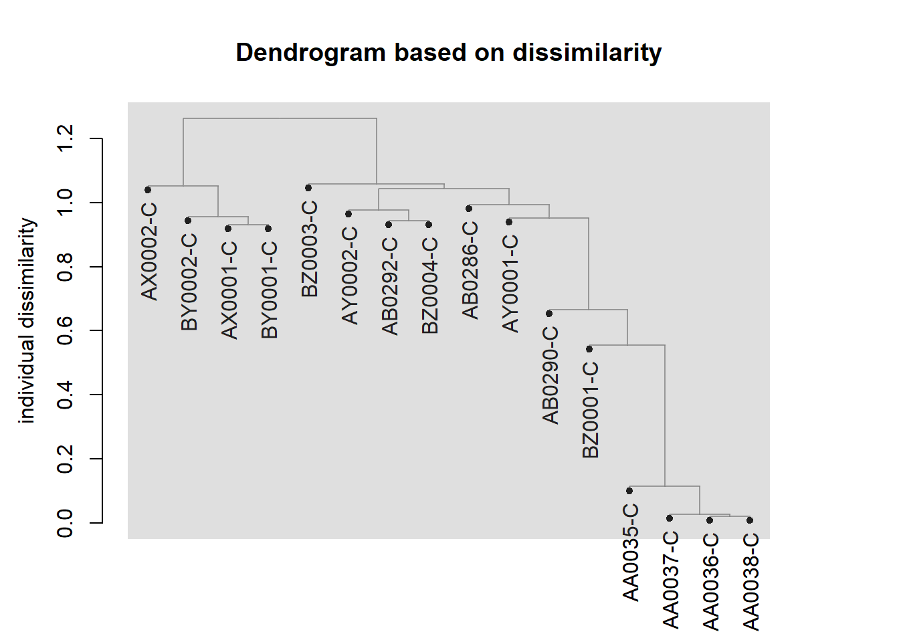

This document provides an example of creating a dendrogram from a VCF file. The VCF file can be altered using VCFtools to look at a specific area of the genome. The lines in red are the code you should enter, while the lines starting with ## are what you would expect to see for the output
This document was created using Rmarkdown http://rmarkdown.rstudio.com.
```
#source("https://bioconductor.org/biocLite.R")
#biocLite("SNPRelate")The packages will have to be loaded each time you open R or Rstudio.
library(gdsfmt)
library(SNPRelate)## SNPRelate -- supported by Streaming SIMD Extensions 2 (SSE2)library(ggplot2)There are two ways that the VCF file can be loaded into Rstudio. The first is directly specifying the file path and name, the second is using the file.choose option which will open a browser so you can search for the file. The second optio that is currently commented out with # (putting a # before any code means it will be treated as text, to run it, just remove the #).
vcf.fn <- "C:\\Users\\Joe Receveur\\Documents\\Virtual Box\\Benin\\10kbExampleData.vcf"
#vcf.fn<- file.choose()The next command will turn the VCF file into a less data intensive form (GDS) for easier computing. If you have loaded the entire genome, expect this command to take an hour or more.
snpgdsVCF2GDS(vcf.fn,"data.gds",method ="biallelic.only")## VCF Format ==> SNP GDS Format
## Method: exacting biallelic SNPs
## Number of samples: 16
## Parsing "C:\Users\Joe Receveur\Documents\Virtual Box\Benin\10kbExampleData.vcf" ...
## import 2148 variants.
## + genotype { Bit2 16x2148, 8.4K } *
## Optimize the access efficiency ...
## Clean up the fragments of GDS file:
## open the file 'data.gds' (25.5K)
## # of fragments: 39
## save to 'data.gds.tmp'
## rename 'data.gds.tmp' (25.3K, reduced: 228B)
## # of fragments: 20These commands prepare the data so it is formatted correctly to create a dissimilarity matrix.
genofile<-snpgdsOpen("data.gds")
set.seed(100)
ibs.hc<-snpgdsHCluster(snpgdsIBS(genofile,num.thread=2, autosome.only=FALSE))## Identity-By-State (IBS) analysis on genotypes:
## Excluding 46 SNPs (monomorphic: TRUE, MAF: NaN, missing rate: NaN)
## Working space: 16 samples, 2,102 SNPs
## using 2 (CPU) cores
## IBS: the sum of all selected genotypes (0,1,2) = 48494
## Fri Nov 10 15:30:03 2017 (internal increment: 65536)
##
[..................................................] 0%, ETC: ---
[==================================================] 100%, completed in 0s
## Fri Nov 10 15:30:03 2017 Done.This step takes the clustering results from before and turns the numerical values into a dendrogram
rv <- snpgdsCutTree(ibs.hc)## Determine groups by permutation (Z threshold: 15, outlier threshold: 5):
## Create 1 groups.plot(rv$dendrogram,main="Within 10 kb of ACE-1")This command creates a dissimilarity matrix between all the samples. If you are looking at the X chromosome, make sure the autosome.only= code is changed to autosome.only=False.
dissMatrix = snpgdsIBS(genofile , sample.id=NULL, autosome.only=TRUE,remove.monosnp=TRUE, maf=NaN, missing.rate=NaN, num.thread=2, verbose=TRUE)## Identity-By-State (IBS) analysis on genotypes:
## Excluding 0 SNP on non-autosomes
## Excluding 46 SNPs (monomorphic: TRUE, MAF: NaN, missing rate: NaN)
## Working space: 16 samples, 2,102 SNPs
## using 2 (CPU) cores
## IBS: the sum of all selected genotypes (0,1,2) = 48494
## Fri Nov 10 15:30:03 2017 (internal increment: 65536)
##
[..................................................] 0%, ETC: ---
[==================================================] 100%, completed in 0s
## Fri Nov 10 15:30:03 2017 Done.This step performs a clustering analysis similar to above but with a different equation.The next line creates a tree file based on dissimilarity rather than relatedness.
snpHCluster = snpgdsHCluster(dissMatrix, sample.id=NULL, need.mat=TRUE, hang=0.01)
cutTree = snpgdsCutTree(snpHCluster, z.threshold=15, outlier.n=5, n.perm = 5000, samp.group=NULL,
col.outlier="red", col.list=NULL, pch.outlier=4, pch.list=NULL,label.H=FALSE, label.Z=TRUE,
verbose=TRUE)## Determine groups by permutation (Z threshold: 15, outlier threshold: 5):
## Create 1 groups.cutTree## $sample.id
## [1] "AA0035-C" "AA0036-C" "AA0037-C" "AA0038-C" "AB0286-C" "AB0290-C"
## [7] "AB0292-C" "AX0001-C" "AX0002-C" "AY0001-C" "AY0002-C" "BY0001-C"
## [13] "BY0002-C" "BZ0001-C" "BZ0003-C" "BZ0004-C"
##
## $z.threshold
## [1] 15
##
## $outlier.n
## [1] 5
##
## $samp.order
## [1] 14 1 3 2 4 16 15 7 11 10 5 6 9 12 8 13
##
## $samp.group
## [1] G001 G001 G001 G001 G001 G001 G001 G001 G001 G001 G001 G001 G001 G001
## [15] G001 G001
## Levels: G001
##
## $dmat
## G001
## G001 0.2068935
##
## $dendrogram
## 'dendrogram' with 2 branches and 16 members total, at height 0.2700422
##
## $merge
## z n1 n2
## 1 0.0000000 1 1
## 2 1.3070571 1 2
## 3 1.7842348 1 3
## 4 0.0000000 1 1
## 5 0.0000000 1 1
## 6 0.7506769 1 2
## 7 1.5654121 2 3
## 8 1.6302752 1 5
## 9 2.0057114 1 4
## 10 0.0000000 1 1
## 11 1.4528401 1 2
## 12 2.4221257 1 6
## 13 6.1503264 5 7
## 14 1.6738589 1 3
## 15 5.5572832 12 4
##
## $clust.count
## G001
## 16snpgdsClose(genofile)Even though the tree is based on dissimilarity, the closest samples are still the most similar or to be more accurate, least dissimilar.
snpgdsDrawTree(cutTree, main = "Phylogenetic Tree",edgePar=list(col=rgb(0.5,0.5,0.5,0.75),t.col="black"),
y.label.kinship=T,leaflab="perpendicular")
sessionInfo()## R version 3.4.2 (2017-09-28)
## Platform: x86_64-w64-mingw32/x64 (64-bit)
## Running under: Windows 10 x64 (build 14393)
##
## Matrix products: default
##
## locale:
## [1] LC_COLLATE=English_United States.1252
## [2] LC_CTYPE=English_United States.1252
## [3] LC_MONETARY=English_United States.1252
## [4] LC_NUMERIC=C
## [5] LC_TIME=English_United States.1252
##
## attached base packages:
## [1] stats graphics grDevices utils datasets methods base
##
## other attached packages:
## [1] ggplot2_2.2.1 SNPRelate_1.12.0 gdsfmt_1.14.0
##
## loaded via a namespace (and not attached):
## [1] Rcpp_0.12.13 digest_0.6.12 rprojroot_1.2 plyr_1.8.4
## [5] grid_3.4.2 gtable_0.2.0 backports_1.1.1 magrittr_1.5
## [9] scales_0.5.0 evaluate_0.10.1 rlang_0.1.4 stringi_1.1.5
## [13] lazyeval_0.2.1 rmarkdown_1.7 tools_3.4.2 stringr_1.2.0
## [17] munsell_0.4.3 yaml_2.1.14 compiler_3.4.2 colorspace_1.3-2
## [21] htmltools_0.3.6 knitr_1.17 tibble_1.3.4